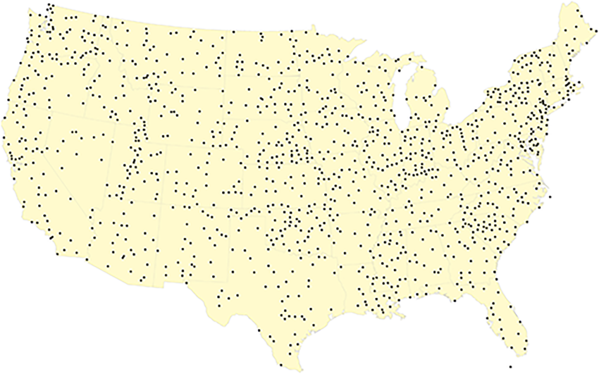

Background & Highlights
- Address and geospatial data is hard to understand and vary in sizes
- Rather than relying on the state/county/city definition of local governments, we would like to organize geospatial information in a uniform manner
- Convert local address to latitude & longitude coordinates then convert the coordinates to a desired h3-index resolution
Body
The state/county/city definition by urban planning officials of just about any country in the world is not uniform or standardized in terms of area and presents a high learning curve when it comes to geospatial analysis. For example, the square meter of the Korean postal code 06076 will differ from the area of the Korean postal code 05676. An area of Songpa-Gu (Korean county) will be different from the area of Gangnam-Gu (Korean county).
Also, address data can be considered as a personally identifiable information (PII) depending on where you obtained it from. If we can transform and store the address data into an index of a grid format that is consistent in size, then the location data will be less sensitive in terms of PII and become more universal.
Before we start, it is important to note that there are 16 different resolution or sizes of hexagon indexes and each finer resolution has cells with one seventh the area of the coarser resolution. Each hexagon will have unique indexes like "8e283082e71501f". For official documentation, please refer to the official documentation
Process
- Obtain the input address and convert it to lat/long coordinates
- Use h3-py python package to transform lat/long coordinates into the desired h3-indexes
- Use various functions to return the center lat/long coordinates of h3-indexes or the index key of lower resolutions
How
# Make sure to use the version 4.x which is currently in beta as of Jan 2023
!pip install 'h3==4.0.0b1'
import h3
import pandas as pd
import numpy as np
## step 1: pre-requisite (obtain a list of lat/long coordinates)
# lat_lng = [['36.2132881923','127.2048766057'], ['36.2132581923','128.2048766057']...]
addr_df = pd.DataFrame(lat_lng, columns = ['lat', 'long'])
# drop empty lat/long coordinates from the addr_df
addr_df['lat'].replace('', np.nan, inplace=True)
addr_df.dropna(subset=['lat'], inplace=True)
## step 2: transform lat/long coordinates to the desired h3-indexes
# we'll be using h3.latlng_to_cell() function from the version 4.x
# we'll obtain h3-index for 2 resolutions [13, 14]
h3_res = [13, 14]
def h3_13(row):
return h3.latlng_to_cell(float(row.lat), float(row.long), h3_res[0])
def h3_14(row):
return h3.latlng_to_cell(float(row.lat), float(row.long), h3_res[1])
# use .apply() in df to create h3-index for each lat/long
addr_df['h3_13'] = addr_df.apply(h3_13, axis = 1)
addr_df['h3_14'] = addr_df.apply(h3_14, axis = 1)
1 You should end up with a data frame similar to below:

## step 3: Other h3 functions
## obtain the centroid of the h3-index by using h3.cell_to_latlng()
def h3_13_centroid(row):
return h3.cell_to_latlng(row.h3_13)
def h3_14_centroid(row):
return h3.cell_to_latlng(row.h3_14)
# use .apply() in df to create new column for centroids
addr_df['centroid_13'] = addr_df.apply(h3_13_centroid, axis = 1)
addr_df['centroid_14'] = addr_df.apply(h3_14_centroid, axis = 1)
2 You should end up with a data frame similar to below:
# splitting the centroid columns
addr_df[['h3_13_cent_lat', 'h3_13_cent_long']] = addr_df['centroid_13'].apply(pd.Series).astype(str)
addr_df[['h3_14_cent_lat', 'h3_14_cent_long']] = addr_df['centroid_14'].apply(pd.Series).astype(str)
addr_df.drop(['centroid_13'], axis = 1, inplace=True)
addr_df.drop(['centroid_14'], axis = 1, inplace=True)
3 You should end up with a data frame similar to below:
## obtain h3-index for higher resolution
# use h3.cell_to_parent(h3-index, resolution) function
def h3_9(x):
return h3.cell_to_parent(x.h3_14, 9)
def h3_9(x):
return h3.cell_to_parent(x.h3_14, 9)
def h3_9(x):
return h3.cell_to_parent(x.h3_14, 9)
# apply the functions above to addr_df
addr_df['h3_9'] = addr_df.apply(h3_9, axis = 1)
addr_df['h3_8'] = addr_df.apply(h3_8, axis = 1)
addr_df['h3_7'] = addr_df.apply(h3_7, axis = 1)
4 You should end up with a data frame similar to below: